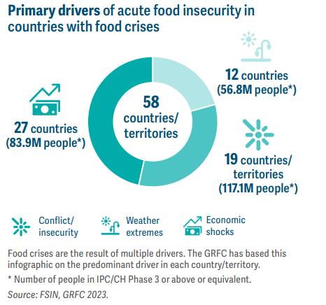

Southeast Asia’s mounting food insecurity
Rice staple rises in net price causing food insurity in Southeast Asia.
ZeroCostCloset recognizes the profound impact of food scarcity in various countries. When people lack consistent access to essential food items, it's not just about the physical sensation of hunger; it's a challenge that reverberates through every facet of their lives. For one, malnutrition becomes a significant concern. Without the necessary nutrients, both children and adults face health issues. Children, in particular, may suffer developmental delays both mentally and physically. This lack of proper nutrition can lead to chronic health problems and diseases, which further exacerbate the individual's and community's challenges. Additionally, the constant search for food can take precedence over other essential activities like seeking education or employment. As a result, the cycle of poverty continues, with future generations inheriting the same struggles. Education, in particular, can take a backseat as children might be pulled out of schools to help their families find or afford food due to poverty, further limiting their future opportunities and prospects in life.
The GRFC 2023 is a collaborative effort among 16 partners to achieve an independent and consensusbased assessment of acute food insecurity that informs humanitarian and development action. Published by the Food Security Information Network (FSIN) in support of the Global Network against Food Crises (GNAFC), the GRFC is the reference document on global, regional and country-level acute food insecurity in 2022.
The Global Report on Food Crises 2023 estimates that over a quarter of a billion people were acutely food-insecure and required urgent food assistance in 58 food-crisis countries/ territories in 2022. This is the highest number in the seven-year history of the GRFC.
Nearly 258 million people in 58 countries/territories were in Crisis or worse acute food insecurity (IPC/CH Phase 3 or above, or equivalent) in 2022 – up from 193 million in 53 countries/territories in 2021. As the graph (top right) shows, while there has been an increase in the population analysed, this is the highest on record since the GRFC started reporting these data in 2017. This marks the fourth consecutive year of rising numbers of people in IPC/CH Phase 3 or above or equivalent due to persistently high numbers in some countries, worsening situations in others, as well as increased analysis.
A global food crisis is when there isn't enough food for everyone around the world. This can happen for many reasons, like bad weather damaging crops, wars stopping food from being transported, or prices going up so much that people can't afford to buy food. When this happens, many people go hungry, and it can lead to other problems like poor health, conflicts, and people having to leave their homes to find food or better living conditions.
Wars, climate change, and rising expenses are causing a big food problem worldwide. Wars damage infrastructure and make goods expensive, which leads to hunger. Hunger can then cause more disputes and protests. Extreme weather events, which are happening more often, harm farming and increase hunger. In 2021, bad weather caused severe hunger in eight African countries, affecting 23.5 million people. The U.N. World Food Programme helps by giving immediate food aid and working on long-term solutions to these problems.
Rice staple rises in net price causing food insurity in Southeast Asia.
World Food Programme says food supply in Gaza is set to run out in weeks.
Donating food to students raised awareness of food insecurity.
🖊️ DJ from Brooklyn supports this.
🖊️ Amy from Queens supports this.
🖊️ Teresa from Harlem supports this.